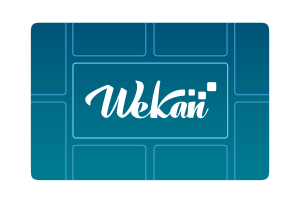

Open-Source kanban.
Backups of Wekan database with mongodump once a day miminum required.
Bugs, updates, users deleting list or card, harddrive full, harddrive crash etc can eat your data. There is no undo yet.
Wekan on Sandstorm is not affected by any Standalone Wekan (Snap/Docker/Source) security issues.
Only newest Wekan is supported. Please report all new bugs immediately.
If you use Standalone Wekan on public Internet, it's better to get automatic security updates with Snap and
restore from backup when needed, than to leave old vulnerable manually updated Docker Wekan running.
With Docker Wekan you still need at least daily backups, if some bug causes Wekan board to not load.